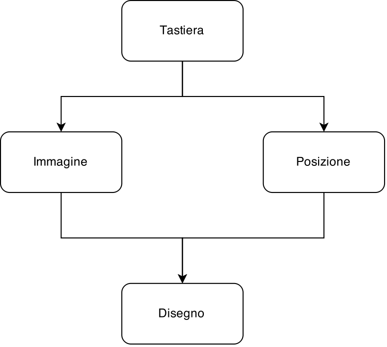

La programmazione funzionale è un paradigma di programmazione in cui il flusso di esecuzione del programma assume la forma di una serie di valutazioni di funzioni matematiche
-Wikipedia
ghci> 2 + 15
17
ghci> 49 * 100
4900
ghci> 1892 - 1472
420
ghci> 5 / 2
2.5
ghci>
ghci> (50 * 100) - 4999
1
ghci> 50 * 100 - 4999
1
ghci> 50 * (100 - 4999)
-244950
ghci> True && False
False
ghci> True && True
True
ghci> False || True
True
ghci> not False
True
ghci> not (True && True)
False
ghci> 5 == 5
True
ghci> 1 == 0
False
ghci> 5 /= 5
False
ghci> 5 /= 4
True
ghci> "hello" == "hello"
True
fibonacci 0 = 0
fibonacci 1 = 1
fibonacci n = fib (n-1) + fib (n-2)
Una funzione, dato lo stesso input, restituirà sempre lo stesso output.
In altre parole, 2+2 fa sempre 4.
[1,2,10,2,666] :: [Int]
Insiemi ordinati di elementi dello stesso tipo
Una lista può essere:
[]2:[]Tutte le altre liste si ricavano da questo:
2:(6:(8:[])) è uguale a [2,6,8]
head ["lol","lel","trolol"] --testa (primo elem.)
"lol"
tail "gufo" --coda
"ufo" --Le stringhe sono liste di caratteri!
[1,4,6,8] !! 3 --selezione di un elemento
6
[1,2] ++ [10,666] --unione
[1,2,10,666]
[1..20] --range
[1,2,3,4,5,6,7,8,9,10,11,12,13,14,15,16,17,18,19,20]
length [4,3,5,6] --lunghezza
4
1 :: Int
'a' :: Char
"abcd" :: String --questo in realtà non lo è
1 :: Int
raddoppia :: Int -> Int
raddoppia x = x*2
sommaDoppi :: Int -> Int -> Int
sommaDoppi x y = raddoppia x + raddoppia y
--
ripeti :: a -> [a]
ripeti a = a:(ripeti a)
map :: (a -> b) -> [a] -> [b]
Applica una funzione a ogni elemento della lista
map _ [] = _
map f (testa:coda) = _
> map succ [1,5,2]
[2,6,3]
> let f x = x*2 in map f [1,2,3]
[2,4,6]
> map (\x -> x*2) [1,2,3]
[2,4,6]
> map (*3) [0,2,10]
[0,6,30]
foldl :: (a -> b -> a) -> a -> [b] -> a
Riduce una lista a un solo elemento
foldl _ accum [] = accum
foldl f accum (testa:coda) = _
> foldl (+) 0 [2,3,5]
10
> sum xs = foldl (+) 0 xs
--altra roba da aggiungere
La programmazione reattiva si basa sui flussi di dati e sulla propagazione dei cambiamenti
| Tempo | Tasto premuto | Immagine del giocatore | Posizione giocatore |
|---|---|---|---|
| 0 | No | mario_fermo.png | 0 |
| 1 | Sì | mario_che_cammina.png | 1 |
| 2 | Sì | mario_che_cammina.png | 2 |
| 3 | No | mario_fermo.png | 2 |
scegliImmagine :: Input -> NomeImmagine
scegliImmagine TastoPremuto = "mario_che_cammina.jpg"
scegliImmagine TastoNonPremuto = "mario_fermo.jpg"
immaginiDaMostrare :: [NomeImmagine]
immaginiDaMostrare = map scegliImmagine inputs --Chi si rivede...
posizioneIniziale :: Int
posizioneIniziale = 0
posizioneGiocatore :: Int
posizioneGiocatore = foldl (\accum x -> if x==TastoPremuto then accum+1 else accum) posizioneIniziale inputs
Il gioco è una funzione che dagli input (tempo+tasti) produce un disegno
